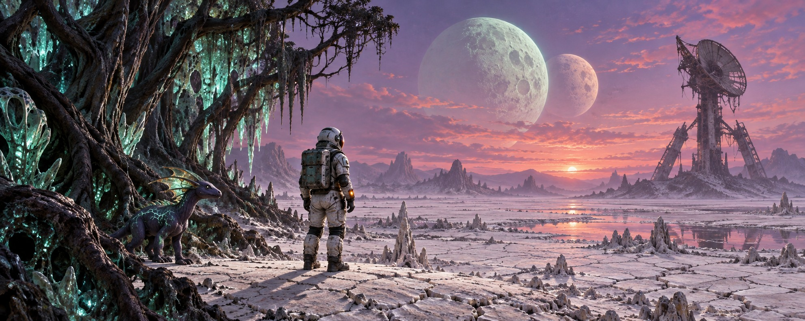
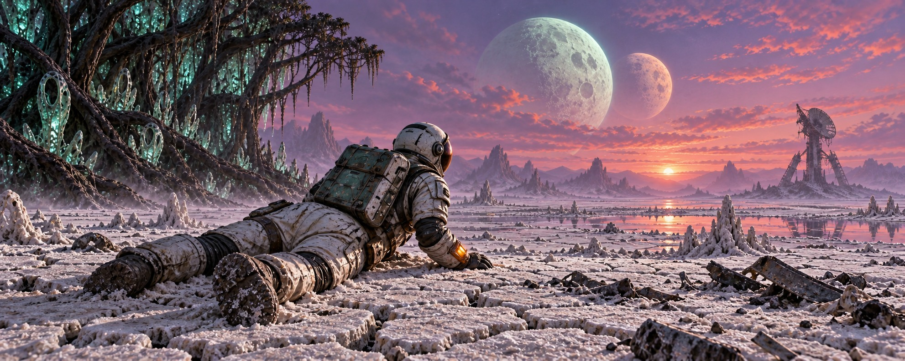
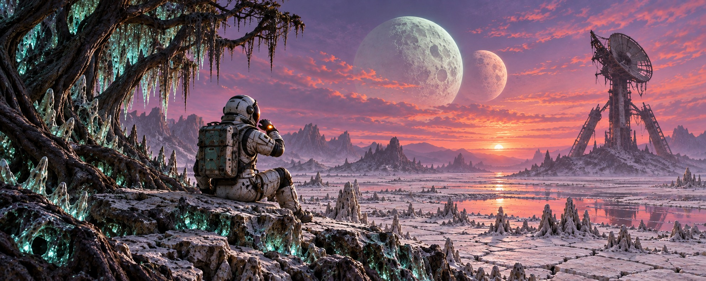
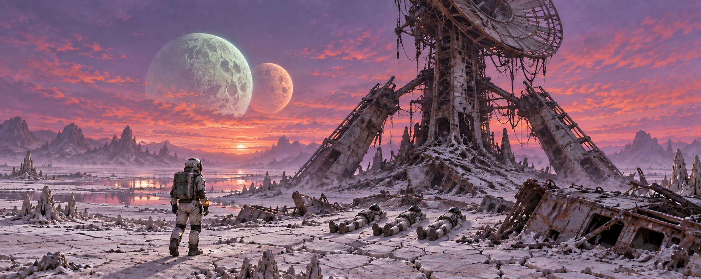
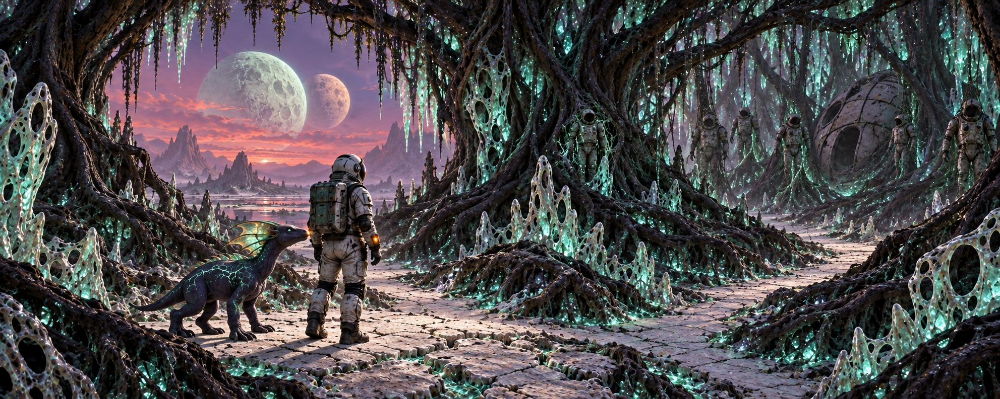
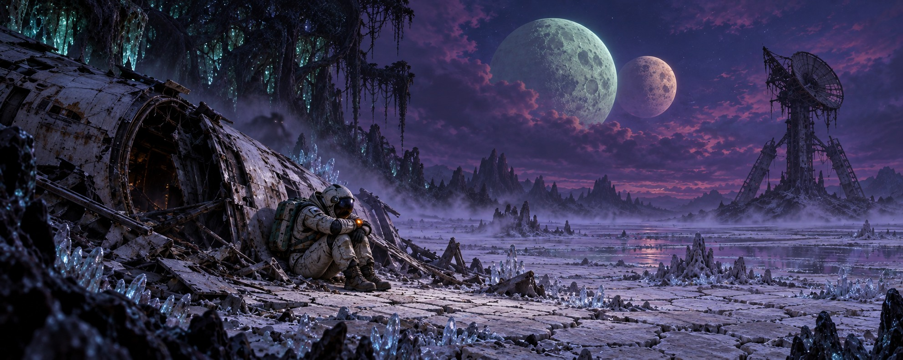
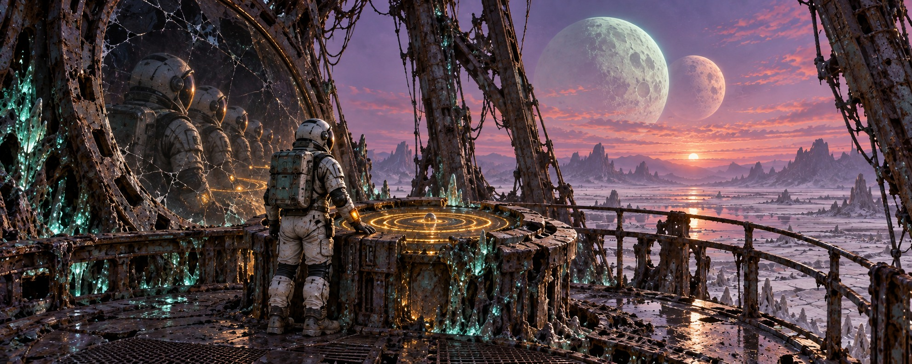
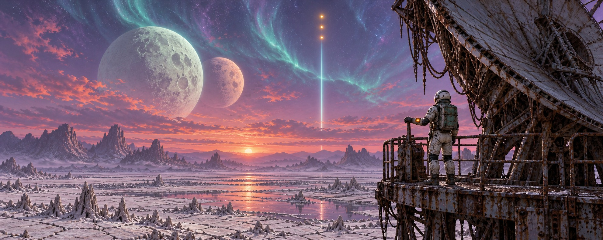
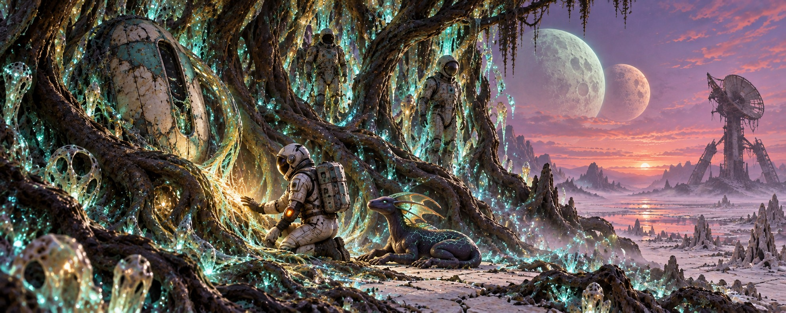
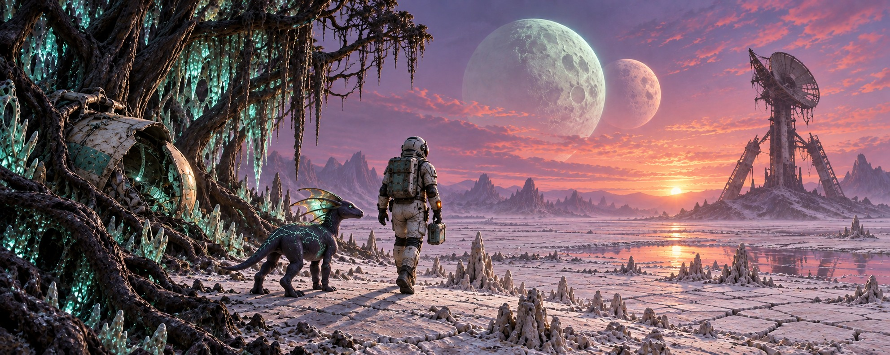

Ten scenes · One alien world
APHELION
Chalk-white plains, twin moons, a fractured relay, and a forest that remembers. A complete illustration set following the game's story and five endings.

01 Aphelion title.jpg

02 The Crash Site crashsite.jpg

03 ECHO Awakens wakehub.jpg

04 The Relay Tower tower.jpg

05 The Living Forest forest.jpg

06 Swallowed by Dusk ending-dusk.jpg

07 The Loop ending-loop.jpg

08 The Signal Answered ending-signal.jpg

09 Roots ending-roots.jpg

10 The Ship Remembers ending-ship.jpg